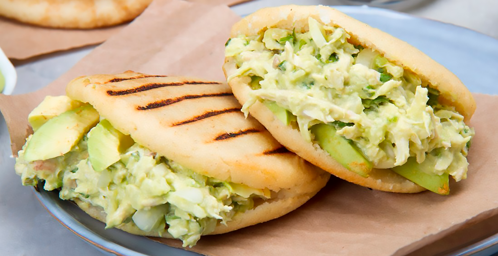
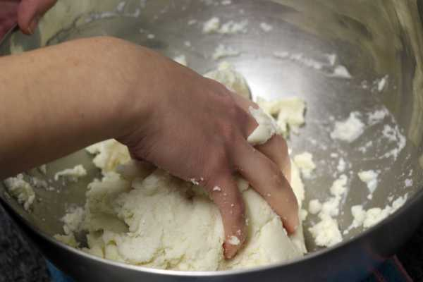
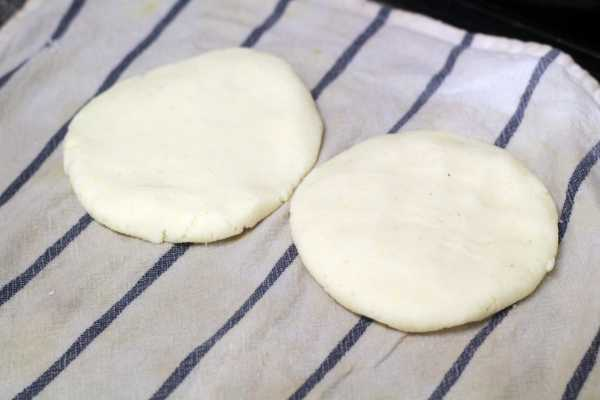
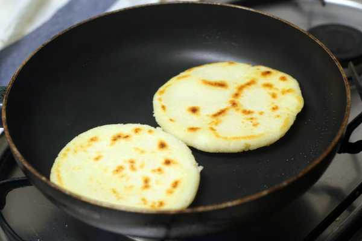
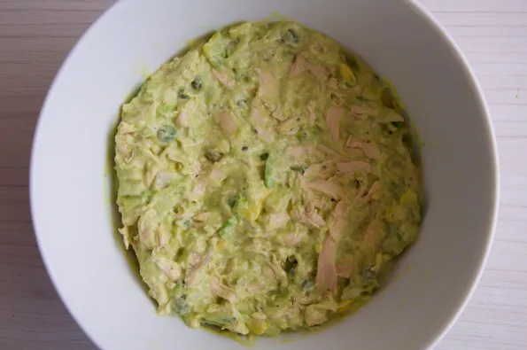
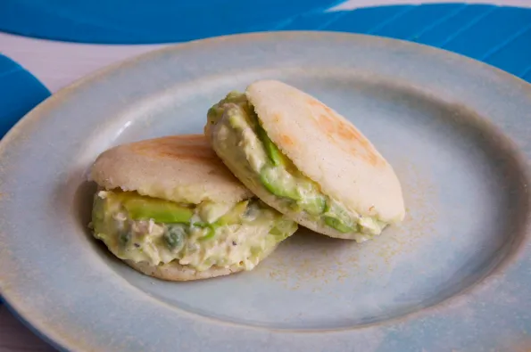

REINA PEPIADA

El desayuno típico en Venezuela, aparte de las empanadas y cachitos de jamón, son sus famosas arepas!
Existen muchas variedades de arepa, como por ejemplo arepas rellenas de pollo, arepas rellenas de carne, arepas rellenas de queso, arepas rellenas de reina pediada, etc.
Hoy vamos a preparar una de mis favoritas!! la arepa de reina pepiada, básicamente el relleno consiste en una mezcla de pollo cocido, aguacate y mayonesa, creánme (para el que no las haya probado) que este relleno es irresistible! una de las cosas más rica que he probado!!
La arepa de reina pepiada es una de las más tradicionales, actualmente las podemos comer en muchos restaurantes venezolanos que se han expandido por muchos países del mundo, pero lo cierto es que son tan fáciles de preparar, que las podemos hacer nosotros mismos en casa y a mi punto de vista quedan súper deliciosas y no son para nada díficiles!
Ingredientes
- 1 pechuga de pollo entera cocida y desmechada
- 1 cebolla pequeña (para la cocción del pollo)
- 2 dientes de ajo (para la cocción del pollo)
- 2 aguacates
- 2 cucharadas de mayonesa
- Harina de maíz precocida
- Agua
- Sal y pimienta al gusto
Paso a paso
- Comenzamos la elaboración de nuestras arepas de reina pepiada, para ello,
en un recipiente vertemos la harina de maíz precocida, un poco de sal,
agua y amasamos hasta obtener una textura homogénea. 
- Ahora es el turno de formar nuestras arepas, para ello, tomamos una porción de la masa,
hacemos una bola y luego la vamos aplanando hasta formar una especie de circunferencia.
(repetimos el proceso con toda la masa de las arepas)
- En una sartén a temperatura media vamos a colocar las arepas
y las vamos a cocinar por ambos lados hasta que queden tostaditas.
(20 minutos aproximadamente)
- En un recipiente vamos a colocar el pollo, el aguacate, la mayonesa, la sal, la pimienta e integramos.
- Tomamos una arepa y con la ayuda de un cuchillo, vamos a abrirlas a la mitad,
le agregamos el relleno y ya tenemos listas nuestras arepas de reina pepiada!! Buen provecho!!!